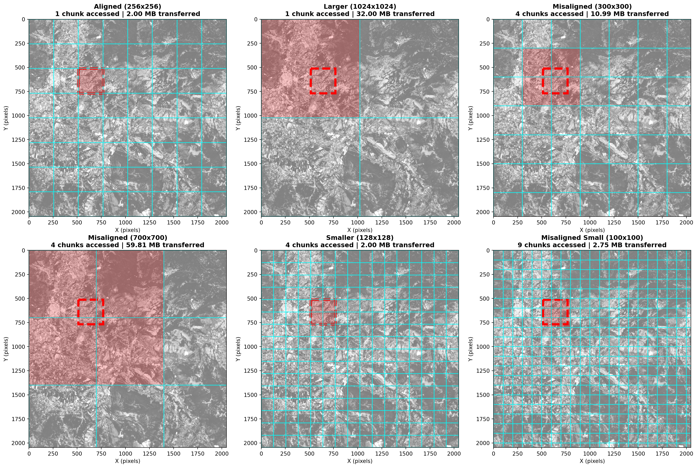
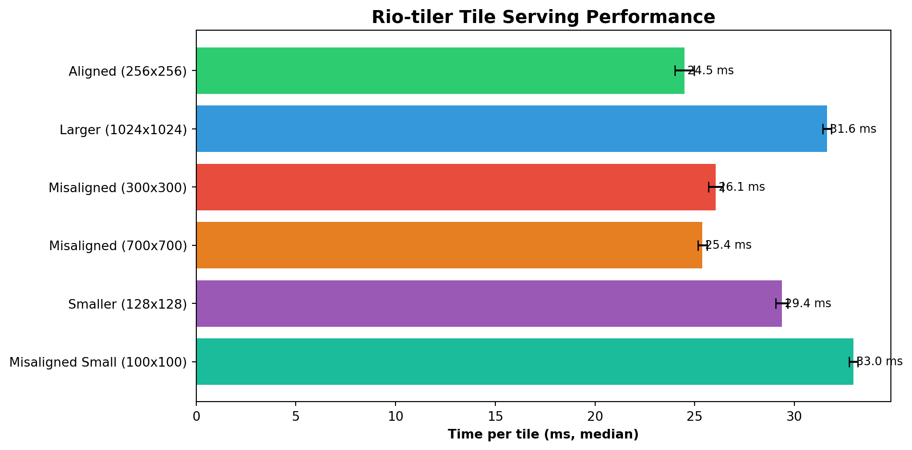

This notebook demonstrates efficient tiling workflows with EOPF Zarr data using rio-tiler and rio-xarray. We’ll showcase how direct Zarr access with proper chunking delivers superior performance for web mapping and visualization tasks.
Rio-tiler is a powerful Python library designed for creating map tiles from raster data sources. Combined with EOPF Zarr’s cloud-optimized format, it enables efficient tile generation for web mapping applications without downloading entire datasets.
What we will learn
🗺️ How to integrate rio-tiler with EOPF Zarr datasets
🎨 Generate map tiles (RGB and false color composites) from Sentinel-2 data
📊 Understand the relationship between Zarr chunks and tile performance
⚡ Observe memory usage patterns for large optical datasets
As rio-tiler is extensively used in this notebook, familiarity with its core concepts is beneficial. Refer to the rio-tiler documentation for more details.
import xarray as xrimport numpy as npimport matplotlib.pyplot as pltfrom pystac_client import Clientfrom pystac import MediaTypefrom rio_tiler.io import XarrayReaderfrom rasterio.warp import transform_boundsimport rioxarray # side effect: registers the .rio accessor on xarray objectsimport warningswarnings.filterwarnings('ignore')print("✅ Libraries imported successfully")
✅ Libraries imported successfully
Connect to EOPF STAC Catalog
We will start by connecting to the EOPF STAC catalog and loading a Sentinel-2 L2A dataset with its native Zarr chunking configuration. We search for a cloud-free Sentinel-2 L2A scene over an area of interest, in this case Napoli, Italy.
# Connect to EOPF STAC APIeopf_stac_api_root ="https://stac.core.eopf.eodc.eu/"catalog = Client.open(url=eopf_stac_api_root)# Search for Sentinel-2 L2A over Napoli during summer 2025search_results = catalog.search( collections='sentinel-2-l2a', bbox=(14.268124, 40.835933, 14.433823, 40.898202), # Napoli AOI sortby=[{"field": "datetime", "direction": "desc"}], max_items=1,filter={"op": "and","args": [ {"op": "lte","args": [ {"property": "eo:cloud_cover"},5# eo:cloud_cover <= 5% ] } ] }, filter_lang='cql2-json')# Get first itemstac_items =list(search_results.items())ifnot stac_items:raiseValueError("No items found. Try adjusting the search parameters.")item = stac_items[0]print(f"📦 Found item: {item.id}")print(f"📅 Acquisition date: {item.properties.get('datetime', 'N/A')}")
📦 Found item: S2C_MSIL2A_20260613T100031_N0512_R122_T33TVF_20260613T151911
📅 Acquisition date: 2026-06-13T10:00:31.025000Z
Open Zarr Dataset with xarray
We’ll use xarray’s open_datatree() to access the hierarchical EOPF Zarr structure directly from cloud storage.
# Get Zarr URL from STAC itemitem_assets = item.get_assets(media_type=MediaType.ZARR)zarr_url = item_assets['product'].hrefzarr_url = zarr_url.replace(':443/', '/')print(f"🌐 Zarr URL: {zarr_url}")# Open with xarray DataTreedt = xr.open_datatree( zarr_url, engine="zarr", chunks={} # Use existing Zarr chunks)print("\n📂 Available groups in DataTree:")for group insorted(dt.groups):if dt[group].ds.data_vars:print(f" {group}: {list(dt[group].ds.data_vars.keys())}")
EOPF Zarr stores CRS information in the root DataTree attributes under other_metadata.horizontal_CRS_code. We need to extract this and set it using rioxarray for rio-tiler compatibility.
# Extract CRS from EOPF metadata (following geozarr.py approach)epsg_code_full = dt.attrs.get("other_metadata", {}).get("horizontal_CRS_code", None)# If CRS not in metadata, infer from coordinatesif epsg_code_full isNone:# Check if coordinates look like UTM (values >> 180 indicate meters, not degrees) x_coords = ds_10m.coords['x'].values y_coords = ds_10m.coords['y'].valuesif x_coords.max() >180or y_coords.max() >180:# Coordinates are in meters - infer UTM zone from x coordinate# For Sentinel-2 over Italy, typical zones are 32N (west) or 33N (east)# Zone 33N covers Naples areaprint("⚠️ CRS not found in metadata. Inferring from coordinates...")print(f" X range: [{x_coords.min():.0f}, {x_coords.max():.0f}]")print(f" Y range: [{y_coords.min():.0f}, {y_coords.max():.0f}]")# For coordinates around 400000-500000m, this is UTM zone 33Nif300000< x_coords.mean() <600000and4000000< y_coords.mean() <5000000: epsg_code_full ="EPSG:32633"# UTM zone 33N (covers Naples area)print(f" Inferred: {epsg_code_full} (UTM zone 33N)")else: epsg_code_full ="EPSG:32633"# Default to UTM 33N for Italyprint(f" Defaulting to: {epsg_code_full}")else: epsg_code_full ="EPSG:4326"# WGS84 lat/lonprint(" Coordinates look like lat/lon degrees - using EPSG:4326")epsg_code = epsg_code_full.split(":")[-1] # Extract numeric part (e.g., "32633" from "EPSG:32633")print(f"\n📍 CRS to use: EPSG:{epsg_code}")print(f" Full code: {epsg_code_full}")# Set CRS on the dataset using rioxarrayds_10m.rio.write_crs(f"epsg:{epsg_code}", inplace=True)print(f"\n✅ CRS set successfully on dataset")
⚠️ CRS not found in metadata. Inferring from coordinates...
X range: [399965, 509755]
Y range: [4490225, 4600015]
Inferred: EPSG:32633 (UTM zone 33N)
📍 CRS to use: EPSG:32633
Full code: EPSG:32633
✅ CRS set successfully on dataset
Verify Geospatial Metadata
Now we can access CRS, bounds, and transform information through rioxarray. This is essential for rio-tiler integration.
Once we have accesed the data we are interested we are able to integrate rio-tiler to generate map tiles from our Zarr dataset.
Prepare DataArray for Rio-tiler
Rio-tiler’s XarrayReader works with DataArrays, not Datasets. We need to stack our RGB bands into a single DataArray with a ‘band’ dimension.
# Verify dataset is readyif ds_10m.rio.crs isNone:raiseValueError("CRS not set! Check previous steps.")# Stack RGB bands into a single DataArray for rio-tiler# XarrayReader requires a DataArray, not a Datasetrgb_bands = xr.concat( [ds_10m['b04'], ds_10m['b03'], ds_10m['b02']], # Red, Green, Blue dim='band').assign_coords(band=['red', 'green', 'blue'])# Preserve CRS and geospatial transform information# This is critical for rio-tiler to correctly interpret the coordinate systemrgb_bands = rgb_bands.rio.write_crs(ds_10m.rio.crs)rgb_bands = rgb_bands.rio.write_transform(ds_10m.rio.transform())print("✅ DataArray prepared for rio-tiler")print(f" CRS: {rgb_bands.rio.crs}")print(f" Transform: {rgb_bands.rio.transform()}")print(f" Shape: {rgb_bands.shape} (band, y, x)")print(f" Bands: {list(rgb_bands.coords['band'].values)}")
We’ll create a Web Mercator tile (zoom 12) showing true color composite (B04-Red, B03-Green, B02-Blue).
# Create RGB composite using XarrayReader with our stacked DataArraywith XarrayReader(rgb_bands) as src:# Get dataset infoprint(f"\n📊 Dataset Info:")print(f" CRS: {src.crs}")print(f" Bounds (UTM): {src.bounds}")# Transform bounds from UTM to WGS84 for tile calculation bounds_wgs84 = transform_bounds(src.crs, 'EPSG:4326', *src.bounds)print(f" Bounds (WGS84): {bounds_wgs84}")# Get a tile at zoom level 12 for Napoli area# Stretch reflectance to 0–255: one (min, max) per band. For Sentinel-2 L2A BOA,# reflectance is often capped around 0.4 (40%) so bright surfaces don't saturate the display.# .rescale() treats all values as valid; mask nodata before tiling if your data uses fill values. tms_tile = src.tms.tile(14.23, 40.83, 12) rgb_data = src.tile(tms_tile.x, tms_tile.y, 12, tilesize=512).rescale(((0, 0.4),))print(f"\n✅ RGB tile generated:")print(f" CRS: {rgb_data.crs}")print(f" Bounds: {rgb_data.bounds}")print(f" Shape: {rgb_data.data.shape}")print(f" Data type: {rgb_data.data.dtype}")
Let’s examine how Zarr chunks relate to tile generation and performance.
Visualize Chunk Grid and Tile Requests
The key to understanding chunk performance is seeing where tiles land relative to chunk boundaries. For this, we can create a visualization to show the chunk grid overlaid on the actual data.
# Create a smaller test dataset for visualization# First create a subset, then rechunk it to show visible chunk gridsubset_size =2048ds_subset_original = ds_10m.isel(x=slice(0, subset_size), y=slice(0, subset_size))print(f"📦 Original Subset:")print(f" Size: {subset_size}×{subset_size} pixels")print(f" Original chunks: {ds_subset_original['b04'].chunks}")# Rechunk to a size that will create a visible grid (512×512)ds_subset = ds_subset_original.chunk({'y': 512, 'x': 512})subset_bands =list(ds_subset.data_vars)print(f"\n📦 Rechunked Test Dataset:")print(f" Size: {subset_size}×{subset_size} pixels")print(f" Variables (all bands loaded on .load() below): {subset_bands}")print(f" New chunks: {ds_subset['b04'].chunks}")print(f" Bounds: {ds_subset.rio.bounds()}")import timet_load = time.perf_counter()ds_subset = ds_subset.load()load_elapsed = time.perf_counter() - t_loadprint(f"\n⏱️ Loaded subset into memory in {load_elapsed:.2f}s "f"(~{ds_subset.nbytes / (1024**2):.1f} MB total across all variables above) — one remote read for Section 3–4")# Restore chunk layout: .load() uses numpy under the hood (chunks=None), but# zarr_tiling_utils and the benchmark need explicit chunks over in-memory data.ds_subset = ds_subset.chunk({'y': 512, 'x': 512})# Get chunk informationif ds_subset['b04'].chunks: chunk_y = ds_subset['b04'].chunks[0][0] chunk_x = ds_subset['b04'].chunks[1][0] n_chunks_y =len(ds_subset['b04'].chunks[0]) n_chunks_x =len(ds_subset['b04'].chunks[1])print(f"\n🧩 Chunk Structure:")print(f" Chunk size: {chunk_y}×{chunk_x} pixels")print(f" Number of chunks: {n_chunks_y}×{n_chunks_x} = {n_chunks_y * n_chunks_x} total")print(f" Chunk size per band: ~{(chunk_y * chunk_x *2) / (1024**2):.2f} MB")print("\nNote: We rechunked to 512×512 to create a visible grid for demonstration.")
📦 Original Subset:
Size: 2048×2048 pixels
Original chunks: ((2048,), (2048,))
📦 Rechunked Test Dataset:
Size: 2048×2048 pixels
Variables (all bands loaded on .load() below): ['b02', 'b03', 'b04', 'b08']
New chunks: ((512, 512, 512, 512), (512, 512, 512, 512))
Bounds: (399960.0, 4579540.0, 420440.0, 4600020.0)
⏱️ Loaded subset into memory in 0.82s (~128.0 MB total across all variables above) — one remote read for Section 3–4
🧩 Chunk Structure:
Chunk size: 512×512 pixels
Number of chunks: 4×4 = 16 total
Chunk size per band: ~0.50 MB
Note: We rechunked to 512×512 to create a visible grid for demonstration.
from zarr_tiling_utils import visualize_chunks_and_tiles# Visualize with test dataset (now properly rechunked to 512×512)tile_info = visualize_chunks_and_tiles(ds_subset, tile_size=256, num_sample_tiles=4)
📐 Using ACTUAL chunk dimensions from dataset:
Chunk size: 512×512 pixels (from ds['b04'].chunks)
Dataset size: 2048×2048 pixels
Tile size for demo: 256×256 pixels
By creating datasets with different chunking strategies, we can compare among different tile access patterns. We assume the requested tiles CRS are aligned with the dataset CRS.
We’ll test the following scenarios: 1. Aligned: Chunks match tile size (256x256) 2. Larger: Chunks much larger than tiles (1024x1024) 3. Misaligned: Chunks don’t align with tiles (300x300) 4. Misaligned Large: Large chunks that don’t align with tiles (700x700) 5. Smaller: Chunks smaller than tiles (128x128) 6. Misaligned Small: Very small chunks that don’t align with tiles (100x100)
# Six chunking strategies on the in-memory subset (512×512 base grid)strategies = {'Aligned (256x256)': {'chunks': {'y': 256, 'x': 256}},'Larger (1024x1024)': {'chunks': {'y': 1024, 'x': 1024}},'Misaligned (300x300)': {'chunks': {'y': 300, 'x': 300}},'Misaligned (700x700)': {'chunks': {'y': 700, 'x': 700}},'Smaller (128x128)': {'chunks': {'y': 128, 'x': 128}},'Misaligned Small (100x100)': {'chunks': {'y': 100, 'x': 100}}}# Rechunk per strategy (underlying arrays are already loaded)ds_variants = {}for name, config in strategies.items(): ds_rechunked = ds_subset.chunk(config['chunks']) ds_variants[name] = ds_rechunked chunk_info = ds_rechunked['b04'].chunksprint(f"{name}:")print(f" Chunks: {chunk_info[0][0]}x{chunk_info[1][0]}")print(f" Number of chunks: {len(chunk_info[0])}×{len(chunk_info[1])} = {len(chunk_info[0]) *len(chunk_info[1])}")print()
Aligned (256x256):
Chunks: 256x256
Number of chunks: 8×8 = 64
Larger (1024x1024):
Chunks: 1024x1024
Number of chunks: 2×2 = 4
Misaligned (300x300):
Chunks: 300x300
Number of chunks: 7×7 = 49
Misaligned (700x700):
Chunks: 700x700
Number of chunks: 3×3 = 9
Smaller (128x128):
Chunks: 128x128
Number of chunks: 16×16 = 256
Misaligned Small (100x100):
Chunks: 100x100
Number of chunks: 21×21 = 441
Visualize Chunking Strategy Comparison
Let’s visualize how a single tile request maps to chunks in each strategy:
from zarr_tiling_utils import compare_chunking_strategiesresults = compare_chunking_strategies(ds_variants, tile_size=256, tile_x=512, tile_y=512)

🎯 Chunk Access and Data Transfer Comparison for 256×256px Tile:
====================================================================================================
Strategy Chunk Size Chunks Tile Data Transferred Overhead Efficiency
----------------------------------------------------------------------------------------------------
Aligned (256x256) 256×256 1 2.00 MB 2.00 MB 1.00x ✅ Optimal
Larger (1024x1024) 1024×1024 1 2.00 MB 32.00 MB 16.00x ❌ High overhead
Misaligned (300x300) 300×300 4 2.00 MB 10.99 MB 5.49x ⚠️ Acceptable
Misaligned (700x700) 700×700 4 2.00 MB 59.81 MB 29.91x ❌ High overhead
Smaller (128x128) 128×128 4 2.00 MB 2.00 MB 1.00x ✅ Good
Misaligned Small (100x100) 100×100 9 2.00 MB 2.75 MB 1.37x ⚠️ Many requests
====================================================================================================
💡 Interpretation:
• Tile Data: Actual data needed for the 256×256px tile
• Transferred: Total data that must be read from storage (full chunks)
• Overhead: Ratio of transferred/needed (lower is better, 1.0x is perfect)
Efficiency considers BOTH chunk count (HTTP requests) AND data overhead:
• ✅ Optimal: 1 chunk + low overhead (≤2x)
• ✅ Good: 2-4 chunks + low overhead (≤2x)
• ⚠️ Acceptable: Trade-offs between chunk count and overhead
• ⚠️ Many requests: Many small chunks but minimal wasted data
• ❌ High overhead: Reading >10x more data than needed
• ❌ Inefficient: Poor performance on both metrics
Rio-tiler Tile Serving Benchmark
We measure how long rio-tiler takes to serve one tile for each chunking strategy using the real XarrayReader.tile() codepath.
The subset above is already loaded into memory, so these timings reflect chunk layout vs. the tile window (slicing and rio-tiler resampling), not repeated HTTPS range reads from the Zarr store. Remote access costs are represented by the one-time load and by earlier cells that open the dataset.
from rasterio.warp import transform_boundsfrom zarr_tiling_utils import benchmark_rio_tiler# Stack RGB for a test DataArray to find tile coordinatestest_da = xr.concat( [ds_subset['b04'], ds_subset['b03'], ds_subset['b02']], dim='band').assign_coords(band=['red', 'green', 'blue']).rio.write_crs(ds_10m.rio.crs)with XarrayReader(test_da) as src:# Transform bounds from UTM to WGS84 (EPSG:4326) for tile calculation bounds_wgs84 = transform_bounds(src.crs, 'EPSG:4326', *src.bounds) center_lng = (bounds_wgs84[0] + bounds_wgs84[2]) /2 center_lat = (bounds_wgs84[1] + bounds_wgs84[3]) /2 tms_tile = src.tms.tile(center_lng, center_lat, 14) tile_x, tile_y, zoom = tms_tile.x, tms_tile.y, 14print(f"🎯 Benchmark tile: x={tile_x}, y={tile_y}, z={zoom}")# Benchmark each chunking strategyresults = {}for name, ds_var in ds_variants.items(): da = xr.concat( [ds_var['b04'], ds_var['b03'], ds_var['b02']], dim='band' ).assign_coords(band=['red', 'green', 'blue']).rio.write_crs(ds_10m.rio.crs) times = benchmark_rio_tiler(da, tile_x, tile_y, zoom, tilesize=256, n_warm=1, n_iter=5) results[name] = timesprint(f"{name:30s}{np.median(times)*1000:7.1f} ms (median of {len(times)} runs)")
🎯 Benchmark tile: x=8825, y=6115, z=14
Aligned (256x256) 24.5 ms (median of 5 runs)
Larger (1024x1024) 31.6 ms (median of 5 runs)
Misaligned (300x300) 26.1 ms (median of 5 runs)
Misaligned (700x700) 25.4 ms (median of 5 runs)
Smaller (128x128) 29.4 ms (median of 5 runs)
Misaligned Small (100x100) 33.0 ms (median of 5 runs)
# Plot benchmark resultsnames =list(results.keys())medians = [np.median(t) *1000for t in results.values()]stds = [np.std(t) *1000for t in results.values()]fig, ax = plt.subplots(figsize=(10, 5))colors = ['#2ecc71', '#3498db', '#e74c3c', '#e67e22', '#9b59b6', '#1abc9c']bars = ax.barh(names, medians, xerr=stds, color=colors, capsize=4)ax.set_xlabel('Time per tile (ms, median)', fontweight='bold')ax.set_title('Rio-tiler Tile Serving Performance', fontweight='bold', fontsize=14)ax.invert_yaxis()for bar, m inzip(bars, medians): ax.text(bar.get_width() +max(stds)*0.3, bar.get_y() + bar.get_height()/2,f'{m:.1f} ms', va='center', fontsize=9)plt.tight_layout()plt.show()

# Summary tablebaseline = np.median(results[names[0]])print(f"{'Strategy':30s}{'Median (ms)':>12s}{'Std (ms)':>10s}{'vs Baseline':>12s}")print('─'*70)for name, times in results.items(): med, s = np.median(times) *1000, np.std(times) *1000print(f"{name:30s}{med:12.1f}{s:10.1f}{np.median(times)/baseline:11.2f}x")
Now that we have walked through rio-tiler’s integration, the following exercises will help you explore further this tools applictaion!
Task 1: Prepare your data
Go to http://bboxfinder.com/ and select an area of interest (AOI) (e.g. your hometown, a research site, etc.)
Create a custom band combination (e.g., SWIR-NIR-Red for B12-B08-B04)
Task 2: Generate your tiles
Compare tile generation performance for different zoom levels
Experiment with different chunk sizes by re-chunking the dataset
Conclusion
Throughout this notebook, we have explored the intricate process of optimizing geospatial data for web-based visualization. We began by extracting the Coordinate Reference Systems (CRS) from EOPF metadata and ensure full compatibility with rioxarray. Once the spatial parameters were set, we moved into data preparation, using xr.concat() to stack individual bands into DataArrays specifically formatted for rio-tiler. This preparation paved the way for the generation of dynamic RGB color map tiles directly from Sentinel-2 imagery.
Beyond simple visualization, we pictured the spatial relationships between Zarr chunks and incoming tile requests to better understand how data is accessed under the hood. By comparing various chunking strategies, we observed firsthand how data layout significantly influences access patterns. To wrap up, we benchmarked rio-tiler’s tile serving capabilities using an in-memory subset; this approach ensured that our timing results focused strictly on the efficiency of different chunk layouts rather than the variability of cloud fetch speeds.
Misaligned chunks cause boundary-crossing reads and extra work per tile, both on the processing side, but more significantly for requesting more parts from a remote source.
Larger chunks (1024×1024) move more data than needed for one tile.
Benchmarks confirm this for processing, but also show that highest impact on performance has the additional remote I/O (i.e. https).
EOPF defaults (~4096px) are tuned for bulk processing, not necessarily web tiling.
Important Patterns for EOPF Data
# Extract CRS from EOPF metadataepsg_code = dt.attrs.get("other_metadata", {}).get("horizontal_CRS_code", "EPSG:4326")ds.rio.write_crs(epsg_code, inplace=True)# Stack bands for rio-tilerrgb = xr.concat([ds['b04'], ds['b03'], ds['b02']], dim='band')rgb = rgb.assign_coords(band=['red', 'green', 'blue'])rgb = rgb.rio.write_crs(ds.rio.crs)# Generate tilewith XarrayReader(rgb) as src: tile = src.tile(x, y, z, tilesize=256)
Completed in approximately 15-20 minutes ⏱️
What’s Next?
In the next notebook, we will explore tools developed in R for processing and integrating the new EOPF Zarr format in the current EO workflows the community is interested in!.